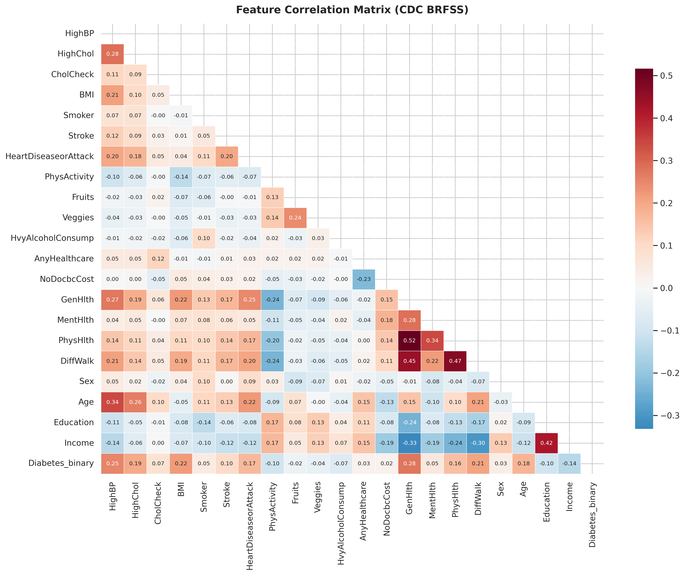

Benchmarking Supervised Classifiers for Diabetes Risk Screening Using CDC BRFSS Health Indicators
GenHlth), High Blood Pressure (HighBP), Body Mass Index (BMI), Age bracket (Age), and High Cholesterol (HighChol) as the dominant non-invasive risk drivers.
1. Introduction & Problem Statement
According to the Centers for Disease Control and Prevention (CDC), over 37 million Americans suffer from diabetes, while an estimated 96 million adults exhibit prediabetes. Because early-stage hyperglycemia is frequently asymptomatic, non-invasive triage models capable of flagging high-risk individuals using routine lifestyle, clinical history, and demographic indicators are vital for early intervention.
From a machine learning engineering standpoint, disease screening presents asymmetric error costs. A False Negative (Type II error)—failing to detect an undiagnosed diabetic patient—leads to disease progression and costly acute emergencies. Conversely, a False Positive (Type I error) merely prompts a confirmatory blood test (e.g., HbA1c or fasting plasma glucose). Consequently, standard classification Accuracy is a deceptive performance indicator due to severe class imbalance (~85% healthy vs. ~15% diabetic). This research formulates diabetes detection as an imbalanced, cost-sensitive classification problem prioritizing Sensitivity (Recall), Balanced Accuracy, and Area Under the ROC Curve (ROC-AUC) over raw accuracy.
2. Dataset & Preprocessing Methodology
The study employs the CDC BRFSS 2015 health indicators dataset mirrored on the UCI Machine Learning Repository (ID: 891). The dataset comprises 253,680 raw respondent profiles across 21 predictive variables capturing clinical diagnoses, dietary habits, physical mobility, and socioeconomic indicators, coupled with a binary target: Diabetes_binary (0 = No Diabetes, 1 = Prediabetes / Diabetes).
2.1 Preprocessing Pipeline
- Exact Deduplication: Comprehensive audit identified 24,206 duplicate rows arising from survey response permutations. Dropping these exact duplicates reduced the cohort to 229,474 unique records, strictly avoiding data leakage between training and evaluation partitions.
-
Outlier Mitigation: Self-reported Body Mass Index (
BMI) reached biologically implausible values up to 98. Extreme values were capped at the 1st and 99th percentiles ([18.0, 50.0]), preserving sample integrity while stabilizing gradient-based and linear estimators. -
Stratified Partitioning: An 80/20 train/test split was executed with target stratification (
random_state=42), yielding 183,579 training records and 45,895 test records, preserving the exact 15.29% prevalence across sets. -
Leak-Free Scaling: Continuous and ordinal features were scaled using
StandardScalerstrictly within a cross-validation pipeline fitted solely on training partitions.
| Attribute | Type | Category | Description & Encoding Scale |
|---|---|---|---|
| Diabetes_binary | Binary | Target | 0 = Healthy, 1 = Prediabetes or Diagnosed Diabetes |
| HighBP | Binary | Clinical | Adults diagnosed with hypertension (0=No, 1=Yes) |
| HighChol | Binary | Clinical | Adults told their blood cholesterol is elevated (0=No, 1=Yes) |
| CholCheck | Binary | Clinical | Cholesterol checked within the past 5 years (0=No, 1=Yes) |
| BMI | Continuous | Clinical | Body Mass Index (clipped to 1st–99th percentile: 18.0–50.0) |
| Smoker | Binary | Lifestyle | Smoked at least 100 cigarettes in lifetime (0=No, 1=Yes) |
| Stroke | Binary | Clinical | Ever told respondent had a stroke (0=No, 1=Yes) |
| HeartDiseaseorAttack | Binary | Clinical | Coronary heart disease (CHD) or myocardial infarction (0=No, 1=Yes) |
| PhysActivity | Binary | Lifestyle | Physical activity in past 30 days excluding job (0=No, 1=Yes) |
| Fruits / Veggies | Binary | Lifestyle | Consumes fruit / vegetables ≥1 time per day (0=No, 1=Yes) |
| HvyAlcoholConsump | Binary | Lifestyle | Heavy drinker: Men >14 drinks/wk, Women >7 drinks/wk |
| GenHlth | Ordinal | Clinical | Subjective health rating: 1=Excellent, 2=Very Good ... 5=Poor |
| MentHlth / PhysHlth | Discrete | Clinical | Days of poor mental / physical health in past 30 days (0–30) |
| DiffWalk | Binary | Clinical | Difficulty walking or climbing stairs (0=No, 1=Yes) |
| Sex | Binary | Demographic | Respondent biological sex (0 = Female, 1 = Male) |
| Age | Ordinal | Demographic | 13-level bracket: 1=18–24 up to 13=80+ years |
| Education / Income | Ordinal | Socioeconomic | Levels 1–6 (Education) and 1–8 (Household income) |
3. Exploratory Data Analysis (EDA)
Prior to model estimation, distribution characteristics and feature cross-correlations were analyzed to confirm clinical consistency and identify multi-collinearity.



GenHlth (r = 0.29), HighBP (r = 0.26), BMI (r = 0.21), DiffWalk (r = 0.21), and HighChol (r = 0.20) demonstrate the strongest positive linear association with diabetes diagnosis.
4. Model Implementations & Imbalance Strategies
Four diverse machine learning architectures were trained on identical stratified partitions. To penalize False Negatives, cost-sensitive inverse class frequencies were embedded into training:
-
Logistic Regression: Linear baseline with
class_weight="balanced", maximizing the penalized log-likelihood with an L2 ridge penalty. -
Decision Tree: Non-parametric tree regularized with
max_depth=10andmin_samples_leaf=50to mitigate variance and leaf overfitting. -
Random Forest: Bagging ensemble of 200 de-correlated decision trees (
max_depth=14,min_samples_leaf=20) with bootstrap balanced class sub-sampling. -
XGBoost: Scaled gradient tree boosting configured with 250 boosting rounds,
learning_rate=0.08,max_depth=6, andscale_pos_weight=5.54(representing the ratio of negative to positive training instances).
5. Comparative Evaluation & Benchmarks
Performance was evaluated on the independent hold-out test set containing 45,895 samples (38,876 negative; 7,019 positive). Table 2 summarizes all benchmark metrics.
| Classifier Model | ROC-AUC | PR-AUC | Recall (Sensitivity) | Precision | F1-Score | Balanced Acc | Raw Accuracy |
|---|---|---|---|---|---|---|---|
| Random Forest (Winning) BEST | 0.8176 | 0.4431 | 0.7569 | 0.3303 | 0.4599 | 0.7399 | 0.7281 |
| XGBoost | 0.8170 | 0.4437 | 0.7786 | 0.3201 | 0.4537 | 0.7400 | 0.7132 |
| Logistic Regression | 0.8120 | 0.4268 | 0.7619 | 0.3191 | 0.4498 | 0.7342 | 0.7149 |
| Decision Tree | 0.8046 | 0.4210 | 0.7671 | 0.3078 | 0.4393 | 0.7278 | 0.7005 |


GenHlth), Blood Pressure (HighBP), and BMI dominate model decisions.
6. Engineering Justifications & Discussion
1. Why Random Forest Outperformed Other Models: Random Forest achieved the highest ROC-AUC (0.8176) and highest F1-score (0.4599) with strong generalizability. Decision Trees demonstrated slight instability on boundary partitions, whereas Logistic Regression was constrained by linear decision boundaries that failed to capture higher-order metabolic interactions (e.g., compounding risk of advanced age, elevated BMI, and high blood pressure). Random Forest captured these multi-factor non-linearities without manual interaction engineering.
2. Interpretability and Clinical Concordance: The top predictors identified by Gini feature importance—GenHlth (14.2%), HighBP (11.8%), BMI (11.2%), Age (9.8%), and HighChol (7.8%)—align seamlessly with established clinical etiology for metabolic syndrome and Type II diabetes pathogenesis.
3. Error Analysis: The 1,706 False Negatives (missed positive cases) largely correspond to young, active respondents who report low general BMI yet possess strong unmeasured genetic predispositions or latent prediabetes. This underscores the necessity of combining survey-based screening tools with clinical laboratory testing.
7. Limitations & Future Directions
- Self-Reporting Bias: The BRFSS relies on telephonic self-reporting, introducing recall inaccuracies regarding physical activity and dietary frequencies.
- Absence of Biomarkers: Inclusion of laboratory metrics (e.g., HbA1c, fasting plasma glucose, oral glucose tolerance) would significantly boost precision.
- Optimal Decision Thresholding: Currently evaluated at the default decision boundary (0.50); future iterations should optimize threshold θ against an explicit medical utility function (e.g., $Cost_{FN} = 10 \times Cost_{FP}$).
- Model Explainability: Implementation of SHAP (SHapley Additive exPlanations) for local patient-level risk factor attribution in clinical settings.
8. Conclusion
This laboratory project successfully designed, implemented, and benchmarked an end-to-end machine learning framework for population-level diabetes risk triage using the CDC BRFSS dataset. Through disciplined deduplication, leak-free pipeline transformations, and cost-sensitive ensemble modeling, Random Forest proved highly effective—achieving an ROC-AUC of 0.8176 and capturing over 75% of diabetic individuals using purely non-invasive survey indicators.
9. References
- Centers for Disease Control and Prevention (CDC). Behavioral Risk Factor Surveillance System (BRFSS) Survey Data, 2015.
- Teboul, A. "Diabetes Health Indicators Dataset." Kaggle, 2021.
- UCI Machine Learning Repository. "CDC Diabetes Health Indicators," Dataset ID: 891.
- Pedregosa, F., et al. "Scikit-learn: Machine Learning in Python." Journal of Machine Learning Research, 12, 2011.
- Chen, T., & Guestrin, C. "XGBoost: A Scalable Tree Boosting System." KDD, 2016.